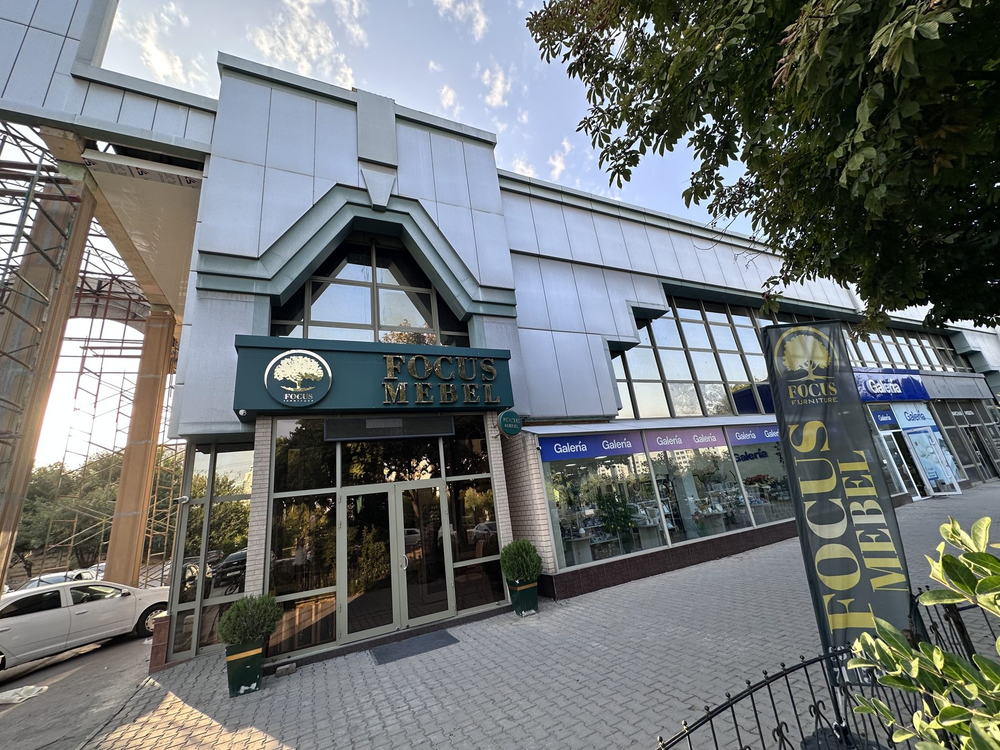
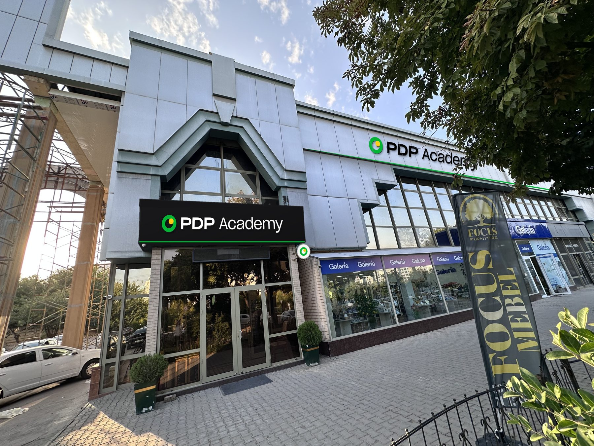
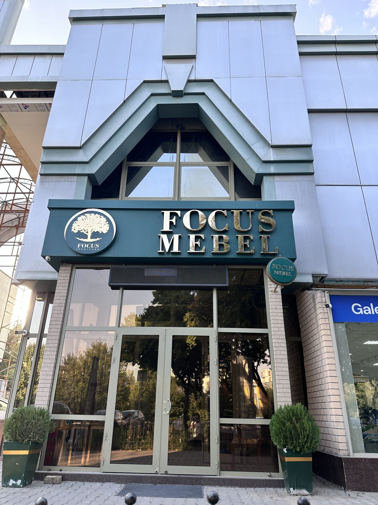
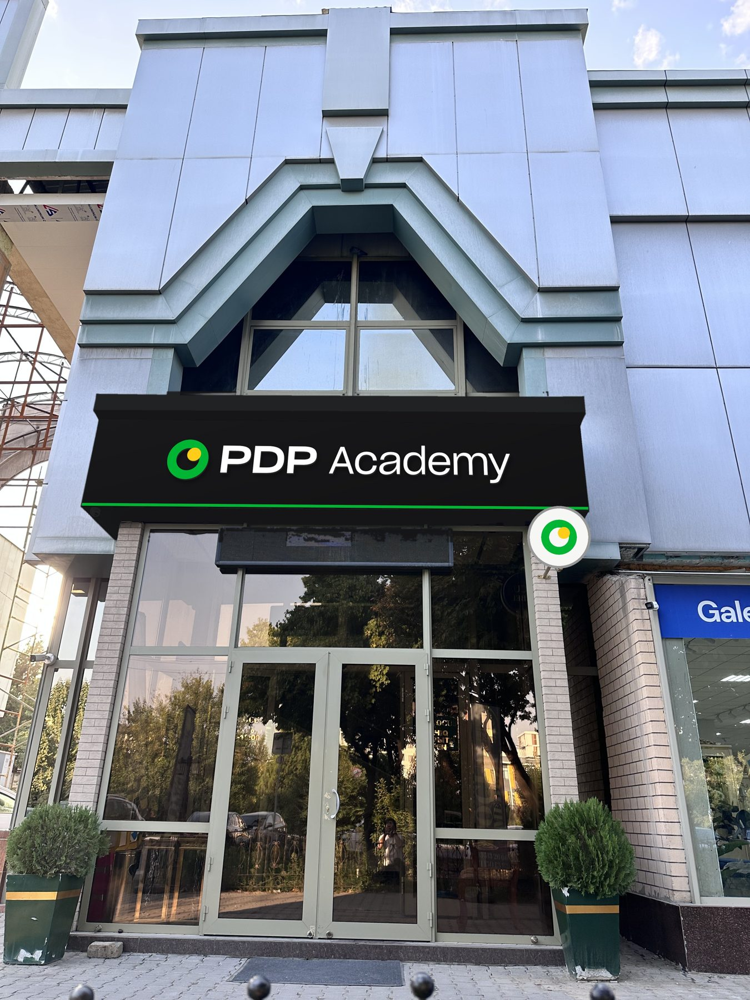
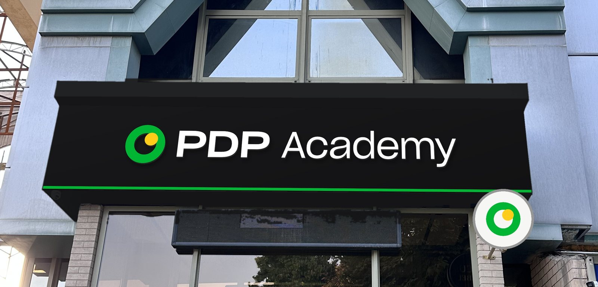
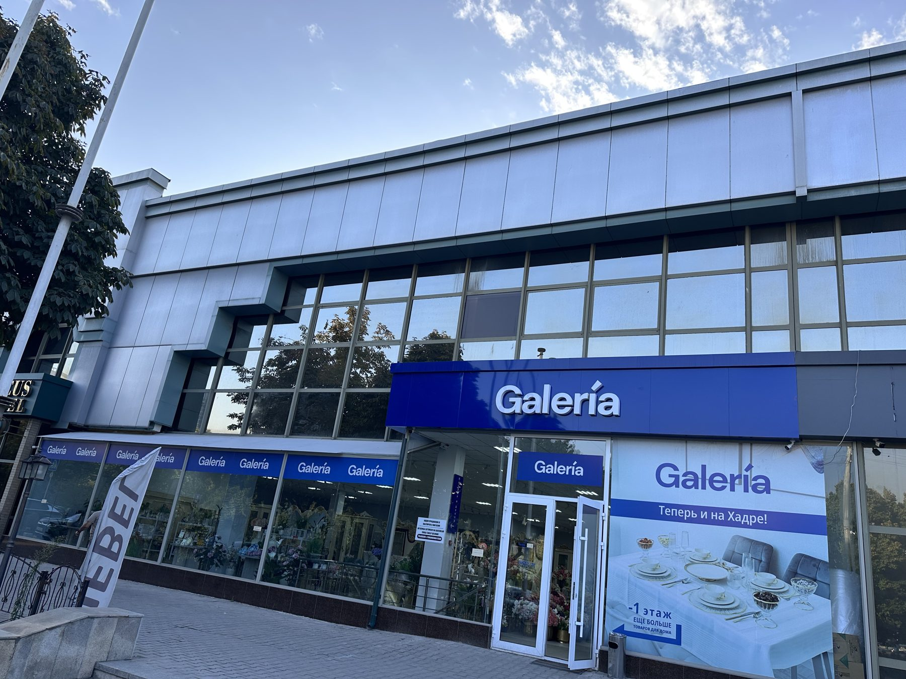
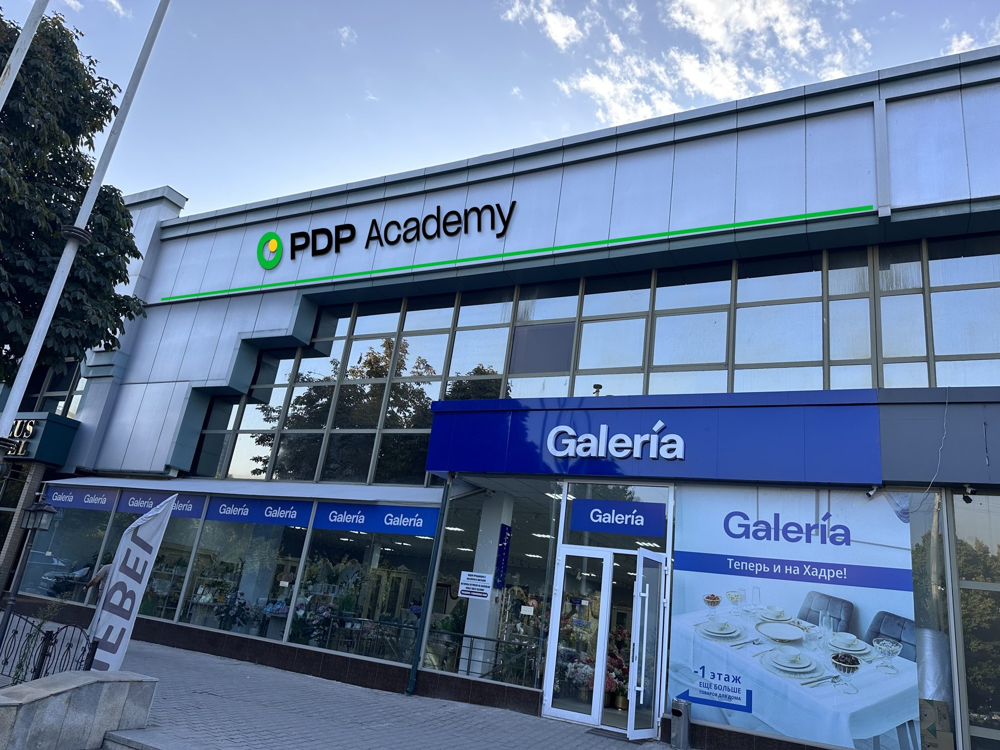

Focus Mebel o‘rnida PDP Academy ochiladi. Kirish qismi va Galeria ustidagi ikkinchi qavat (Galeria vivyeskasi tugagan ustungacha) PDP Academy brendida bezatiladi.


Chiziqni chapga va o‘ngga suring.


Mavjud qutini saqlab, yuzasi qora kompozit bilan qayta qoplanadi. Ustiga ichidan yoritiladigan hajmli harflar qo‘yiladi.



Deraza ustidagi kumushrang panel PDP Academy hududini belgilaydi. Bu qism Focus kirishidan Galeria vivyeskasi tugagan ustungacha davom etadi.
Rasmlar sizning fotosuratlaringiz ustiga perspektivada qo‘yilgan taklif. O‘lcham va materiallar taxminiy, aniq chizma o‘lchovdan keyin tayyorlanadi.